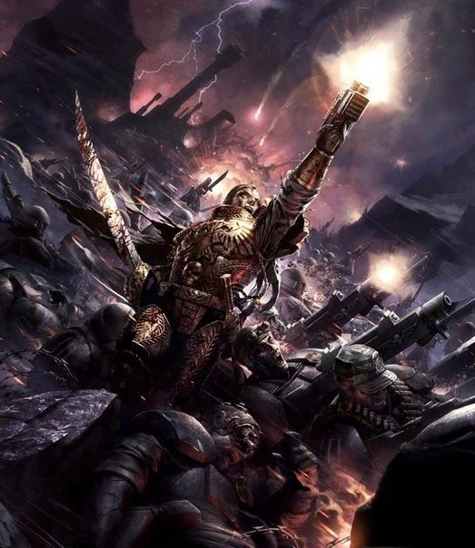
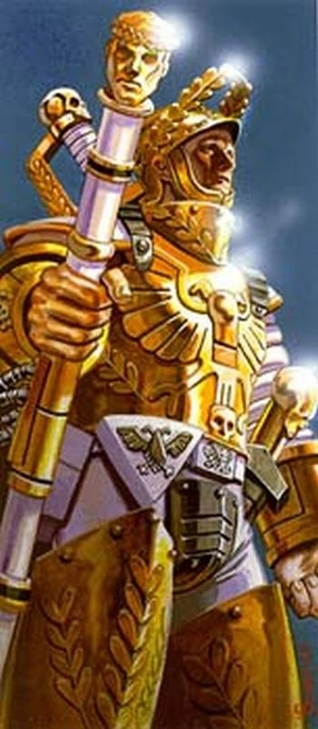
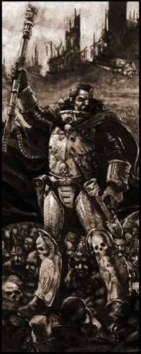

Macharius
| Macharius | |
|---|---|
| Lord Solar of the Imperium; Saint of the Imperial Cult | |
 The Lord Solar in battle during the Macharian Conquests Artwork © Games Workshop | |
| Lord Commander Solar | |
| Tenure | 386 – 400.M41 |
| Predecessor | Phillips |
| Successor | Not recorded |
| Warmaster of the Imperium | |
| Tenure | 386 – 400.M41 |
| Conferred by | High Lords of Terra |
| Born | 356.M41, Donia, Segmentum Pacificus |
| Died | 400.M41 (circumstances disputed) |
| Resting place | Cathedral of Saint Macharius, Macharia |
| Allegiance | Imperium of Mankind |
| Service | Astra Militarum |
| Relatives |
|
| Wargear | The winged helm of Indijona the Vagrant; power sword; bolt pistol |
| Known for | The Macharian Crusade; nearly a thousand worlds won for the Imperium |
| Canonised | Early 5th century M41, by the Adeptus Ministorum |
Macharius, called Lord Solar Macharius and venerated as Saint Macharius, was the Lord Commander Solar and Warmaster of the Imperium of Mankind from 386 to 400.M41. He led the Macharian Crusade of 392–399.M41, in which his armies took nearly a thousand worlds in seven years and reached the western rim of the galaxy. Imperial scholars generally rank him as the greatest commander of the Astra Militarum in its history and the most successful Warmaster since Horus. Many compare his gifts to those of the primarchs, though he was an unaugmented man.[1][2]
Born on the Civilised World of Donia in the Segmentum Pacificus, Macharius was a renowned general in his early twenties and became Lord Solar at about thirty, the youngest person ever to hold the office. His crusade was stopped only when his soldiers refused to follow him beyond the light of the Astronomican. He died in 400.M41 on the way back, and his death began the seventy-year civil war called the Macharian Heresy. The official account of his death and the account preserved in the papers of his canonisation disagree. He was canonised by the Ecclesiarchy, and the world of Macharia became his shrine.[1][3]
Early life and career
[edit]Macharius was born in 356.M41, the heir of Governor Pella of Donia. Imperial biographies say that he was a born soldier and that by his early twenties he was a general of the Astra Militarum with a reputation across the segmentum. He came to the attention of the High Lords of Terra during the suppression of the Roxane Rebellion, when he rescued the Lord Commander Solar, Phillips, from a position in which the Lord Solar would otherwise have been lost.[2]
Phillips recognised his ability and took him under his protection, naming him as his successor. In those years Macharius gathered the officers who would later lead his armies: Sejanus, Borgen Crassus, Tarka, Arrian, Lysander of Choripoli and Cyrus of Larrentine. Sejanus became his deputy and the commander of the 2nd Army Group.[2]
Lord Solar
[edit]In 386.M41 Phillips was killed in the Lemort Landings and Macharius inherited his command. The office he took is among the highest in the Imperium. The Lord Commander Solar commands the Imperial forces of the Segmentum Solar, and because those forces defend Terra itself, the holder is often seated among the High Lords. In Macharius' day the office was joined to the rarely conferred rank of Warmaster, a title that many had regarded as ill-omened since the treachery of Horus.[a][4]
Macharius visited Terra only once, for his investiture. He then took direct command, and with an army of his own Donian regiments conquered the worlds of Lands End, Morbellum and Jalfrezi III. He used these victories to argue for the great crusade he had long planned.[2]

The Macharian Crusade
[edit]The crusade set out from Macharia in 392.M41 with seven army groups of the Astra Militarum, contingents from five Space Marine Chapters, a great fleet and the support of the Adeptus Mechanicus. In seven years it advanced to the Halo Stars. Its principal campaigns are described in the article on the Macharian Crusade.[5]
Several episodes from the crusade became part of the Lord Solar's legend. At Karsk he faced the "Angel of Fire", a daemon of Tzeentch worshipped by the cult that ruled the system, and refused its offer of dominion over the galaxy. On Gedrosia he took the golden winged helm of the explorer Indijona the Vagrant from its tomb and wore it for the rest of his life. On Zaga IV a bolt round lodged in his chest and did not explode, which the crusade's Confessors proclaimed a sign of the Emperor's favour. In 397.M41 an Ork warboss wounded him so gravely that the campaign stood in doubt until he recovered.[5]
His methods were hard. When Adrantis Five held the 5th Army Group for almost two years, Macharius had a comet brought down upon it. Conquered peoples were brought under direct rule or broken. Imperial scholars admire the speed and coordination of his campaigns, but some note that the pace he demanded wore his armies down.[5][6]
The refusal at the Halo Stars
[edit]In 399.M41 the armies reached the rim of the galaxy, where the Astronomican's light failed and the stars beyond were said to be haunted. The generals asked Macharius to stop and the soldiers refused to go on. It is recorded that when he understood that he could conquer no more he fell to his knees and wept, and then locked himself away and drank for days. He emerged sober and ordered the return.[1]
Death
[edit]Macharius died in 400.M41 on the return journey. The official account says that he died of a fever caught on the jungle world of Jucha. A popular version holds that he let himself die, preferring the company of the heroes of the past to that of men who had refused him.[1]
The documents assembled for his canonisation give a darker account. They place his death on Loki, during the first siege of that world, where his former general Richter had gone over to Nurgle. Macharius, by then infected with plagues of the Plague God and with days or weeks to live, led a final assault and killed Richter, and was himself killed soon after, officially by a hidden cultist who also killed the Inquisitor Drake. A lone survivor testified that the killer was an Imperial assassin disguised as a storm trooper, that Drake had been passing information to Richter, and that the Imperium could not permit its greatest hero to die corrupted. The Inquisition has sealed these papers and has never confirmed or denied them.[3]
He was buried on Macharia. A million soldiers marched in his funeral procession, and a hundred generals laid their swords upon his sarcophagus. The Adeptus Ministorum canonised him soon after, and Macharia was declared a shrine world, its great cathedral raised over his tomb. Within months of his death his generals had begun to fight over his conquests, beginning the Macharian Heresy, which the Adeptus Astartes took some seventy years to suppress.[1][6]

Character and command
[edit]Imperial biographers describe Macharius as a man of overwhelming will and charm, beloved by his troops and impatient with those who could not match him. He led from the front and was wounded many times. His view of war was absolute. A saying attributed to him holds that victory means not merely defeating an enemy but erasing every trace of him, so that there can be no recovery.[2]
He was also an exacting organiser. His use of independent army groups, each able to fight alone yet converge quickly, and his habit of keeping the enemy off balance with simultaneous offensives, are still taught at the staff colleges of the Astra Militarum. Critics note that his system depended on his personal authority, and that his death left nothing to hold the generals together.[6]
Legacy and veneration
[edit]Saint Macharius is one of the most popular military saints of the Imperial Cult and a patron of the Astra Militarum. His shrine on Macharia receives millions of pilgrims each year. The Imperium has named weapons and warships in his honour, among them the Macharius heavy tank and the battleships Lord Solar Macharius and Macharia Victrix.[4]
The office he held survives. In the Era Indomitus it is held by Lord Solar Leontus, who commands the Astra Militarum armies of the Indomitus Crusade under Roboute Guilliman, and who is often measured against the standard that Macharius set.[7]
Timeline
[edit]| Date | Event |
|---|---|
| 356.M41 | Macharius is born on Donia, the heir of Governor Pella |
| c. 378.M41[b] | Macharius rescues Lord Commander Solar Phillips during the suppression of the Roxane Rebellion |
| 386.M41 | Phillips is killed in the Lemort Landings, and Macharius becomes Lord Solar and Warmaster |
| c. 388.M41[c] | Macharius conquers Lands End, Morbellum and Jalfrezi III with his own Donian regiments and argues for a great crusade |
| 392.M41 | The Macharian Crusade sets out from Macharia with seven army groups |
| 397.M41 | An Ork warboss gravely wounds Macharius, and the campaign stands in doubt until he recovers |
| 399.M41 | At the Halo Stars the soldiers refuse to go further and the Crusade turns back |
| 400.M41 | Macharius dies on the return journey; his generals begin the Macharian Heresy |
| 400–470.M41[d] | The Macharian Heresy, which the Adeptus Astartes takes some seventy years to suppress |
| early 5th century M41 | The Adeptus Ministorum canonises Macharius, and Macharia is declared a shrine world |
See also
[edit]Notes
[edit]- ^ Imperial records were for a time uncertain whether "Solar" was part of his name or of his title. The Departmento Munitorum now treats "Lord Solar" as the title, and the dialogue recorded between Macharius and Sejanus addresses him by it.
- ^ Estimated from the sequence of events; no record gives an exact year.
- ^ Estimated from the sequence of events; no record gives an exact year.
- ^ Estimated from the length of the conflict; no record gives an exact year.
References
[edit]- ^ a b c d e King, William. Angel of Fire (novel). Black Library.
- ^ a b c d e King, William. Fist of Demetrius (novel). Black Library.
- ^ a b King, William. Fall of Macharius (novel). Black Library.
- ^ a b Codex: Imperial Guard (5th Edition), pg. 13. Games Workshop.
- ^ a b c Codex: Imperial Guard (3rd Edition), pg. 22. Games Workshop.
- ^ a b c Codex: Imperial Guard (2nd Edition), pp. 31-32, 59, 83. Games Workshop.
- ^ Imperial Armour Volume Ten - The Badab War: Part One, pp. 108-109.